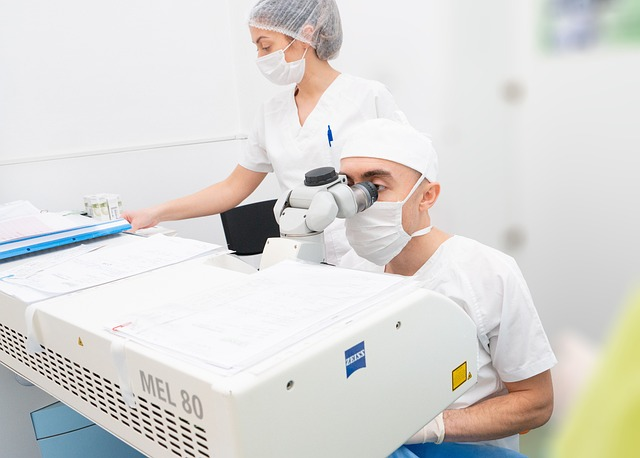

GUIA PARA PACIENTES / HISTÓRICO DE CICATRIZAÇÃO
Histórico de queloide ou cicatriz elevada: o que contar antes?
Uma cicatriz alta depois de cirurgia, piercing, acne ou outra lesão é uma informação relevante antes de um procedimento. Conte o que aconteceu e onde; a profissional poderá avaliar o tipo de procedimento, a área e o nível de lesão esperado, sem presumir uma regra igual para todos.

O que significa dizer que uma cicatriz ficou “alta”?
Queloides e cicatrizes hipertróficas são cicatrizes elevadas, mas não são a mesma coisa e não podem ser confirmadas por uma descrição curta ou por uma foto. Uma cicatriz que cresceu além dos limites da lesão inicial, que aumentou com o tempo, coça ou dói merece ser descrita à profissional ou avaliada por dermatologista. Não tente diagnosticar sua tendência de cicatrização sozinho.
Uma história pessoal — e, quando houver, familiar — pode ajudar a equipe a decidir se precisa esclarecer a cicatriz antes de propor outro procedimento. A American Academy of Dermatology (AAD) recomenda informar ao profissional quando a pessoa ou familiares desenvolvem queloides antes de procedimentos cosméticos.
Que informações são úteis?
- Qual situação precedeu a cicatriz: acne, corte, queimadura, piercing, tatuagem, cirurgia, injeção ou procedimento estético.
- Localização, tamanho aproximado e se a cicatriz ultrapassou a área original da lesão.
- Se cresceu, permaneceu estável, coçou, doeu ou limitou movimento; quando começou a mudar.
- Tratamentos anteriores e como a cicatriz respondeu.
- Histórico familiar de cicatrizes elevadas e qualquer diagnóstico feito por dermatologista.
- Fotos antigas e atuais, se disponíveis; leve-as sem adiar avaliação de uma cicatriz ativa ou em mudança.
Procedimentos diferentes não têm uma regra única
Laser ablativo, microagulhamento, peeling químico, microdermoabrasão e procedimentos de plasma diferem na forma, profundidade e extensão com que afetam a pele. Uma recomendação para um dispositivo não deve ser automaticamente aplicada a outro serviço. Por exemplo, a FDA dos Estados Unidos lista histórico de queloide como fator de não adequação para os dispositivos de microagulhamento que avaliou; essa orientação é específica ao escopo e aos dispositivos da agência norte-americana, não uma regra brasileira para todos os procedimentos.
A AAD recomenda avaliação dermatológica antes de microdermoabrasão em pessoas que cicatrizam facilmente e orienta informar a tendência a queloides antes de procedimentos cosméticos. Essas recomendações justificam uma conversa individual, não uma conclusão de que todo procedimento seja proibido ou seguro. A área a tratar, a finalidade, o equipamento, o modo de uso e a cicatrização anterior precisam ser considerados.
Perguntas para a consulta
- Este procedimento produz lesão cutânea? Em qual camada e área?
- Há dados ou instruções específicas para pessoas com minha história de cicatrização?
- O modelo e a finalidade do equipamento estão confirmados? A recomendação muda se a cicatriz estiver na área planejada?
- É preciso avaliação dermatológica antes de decidir?
- Existem alternativas com outro perfil de lesão ou a opção de adiar?
- Que sinais após o procedimento devem ser comunicados e quem fará o acompanhamento?
Se não houver resposta clara sobre aparelho, profundidade, protocolo ou seguimento, peça esclarecimento antes de decidir. O site não informa um protocolo local específico para histórico de queloide.
Fontes e limites
- AAD: informar histórico pessoal ou familiar de queloides antes de procedimentos cosméticos e discutir alternativas.
- AAD: avaliação dermatológica antes de microdermoabrasão para pessoas que cicatrizam facilmente.
- FDA: informações de segurança e seleção para dispositivos de microagulhamento autorizados nos Estados Unidos; não é norma brasileira nem cobre todas as técnicas.
Essas fontes não identificam dispositivos ou protocolos locais, não determinam escopo profissional no Brasil e não substituem avaliação de dermatologista ou da profissional responsável.
Vamos conversar sobre o seu cuidado?
Leve suas dúvidas para uma conversa individual com Franciele Sofiati. A avaliação considera sua história e o que faz sentido para você.